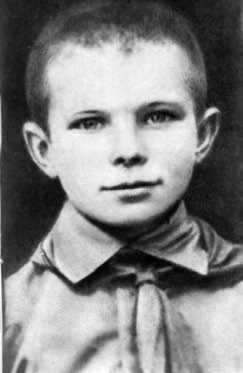

12 апреля 1961 года, советский космонавт Юрий Алексеевич Гагарин на космическом корабле «Восток» впервые в истории человечества отправился в космос и совершил орбитальный облет Земли.
В крестьянской семье Алексея Ивановича и Анны Тимофеевны Гагариных было четверо детей: Валентин, Зоя, Юрий и Борис. Отец плотничал, мать работала в колхозе животноводом. Юрий родился 9 марта 1934 года. Совсем юным, окончив всего 6 классов, Юра принял решение поступать в ремесленное училище, чтобы начать зарабатывать и помогать семье. Отлично закончившие училище могли продолжить учебу по специальности. Так Гагарин оказался в Саратовском индустриальном техникуме. На четвертом курсе представилась возможность записаться в аэроклуб. Сбывалась давняя мечта – стать летчиком. Техникум Юрий Гагарин закончил с отличием. Но его уже неудержимо влекло к себе небо. Началась увлеченная учеба в Чкалове (ныне Оренбург). Местом службы после окончания училища Гагарин выбрал Заполярье. В 26 лет старший лейтенант Юрий Алексеевич Гагарин был зачислен в отряд из 20 человек, которых стали готовить к полету в космос. Началась напряженная подготовка к полету. Теоретические дисциплины, парашютная подготовка, различные тренировки: центрифуга с огромными перегрузками, барокамера с пониженным содержанием кислорода, тепловая камера с жарой до 70-80 градусов, вибростенд, сурдокамера – пребывание в абсолютной тишине и одиночестве.
12 апреля 1961 года космический корабль "Восток" с военным летчиком Юрием Гагариным стартовал с космодрома Байконур. После успешного старта корабль вышел на орбиту. Из воспоминаний Юрия Гагарина: "Корабль вышел на орбиту - широкую космическую магистраль. Наступила невесомость - то самое состояние, о котором еще в детстве я читал в книгах К. Э. Циолковского. Сначала это чувство было необычным, но я вскоре привык к нему, освоился и продолжал выполнять программу, заданную на полет. "Восток" шел со скоростью, близкой к 28 000 километров в час. С момента отрыва ракеты от стартового устройства управление всеми ее сложными механизмами приняли на себя разумные автоматические системы. Они направляли рули, заставляя ракету двигаться по заданной траектории, управляли двигательной установкой, задавая необходимую скорость, сбрасывали отработанные ступени ракеты. В заключительном этапе полета произошло автоматическое включение тормозного устройства. "Восток" постепенно стал сбавлять скорость. Невесомость исчезла, стали наростать перегрузки. На высоте 7 км отстрелилась крышка люка, и Юрий Гагарин вместе с креслом катапультировался из спускаемого аппарата. Приземление произошло недалеко от деревни Смеловка Энгельсского района Саратовской области. Из воспоминаний Юрия Гагарина: "Случилось, как в хорошем романе, - мое возвращение из космоса произошло в тех самых местах, где я впервые в жизни летал на самолете. Сколько времени прошло с той поры? Всего только шесть лет. Но как изменились мерила! В этот день я летел в двести раз быстрее, в двести раз выше. В двести раз выросли советские крылья!